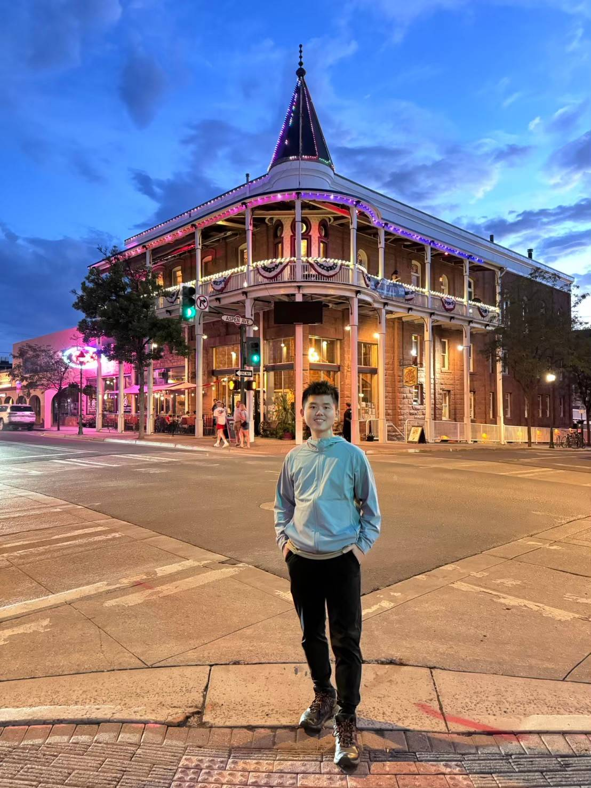

李宗祐 (Lee, Tsung-Yu)
Data Scientist
Department of Statistics, National Cheng Kung University
My name is 李宗祐. I graduate in NCKU.
I'm interested in Data science.
Mention your educational background — degrees earned, institutions attended, and any notable achievements. You may also link to your CV for full details.